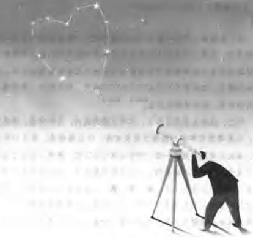

万物简史
作者：[美]比尔·布莱森

万物简史 《A short History of Nearly Everything》
本书的评价：
科学从未如此引人入胜，我们所居住的世界也从未如此充满了惊奇和美妙。读过万物简史之后，我对死亡不再感到恐惧。
本书的颁奖词：这部雄心勃勃的著作，通过一种富于智慧和极易理解的方式，将科学与最广大的潜在读者联系在了一起。
作者用漫谈的方式，通过讲述各种历史逸事把难懂的科学概念写得生动可读。通过对一系列问题的回答，作者对宇宙哲学，
古生物学， 物理学，化学，气候学，生命科学，地质学，人类学的许多基本常识，都异常清晰和熟练的进行了解释。
地球是由明确的层次组成，中心是一个铁和镍组成的发热球体，这个球体与太阳表明一样的灼热，作者当时就无限惊讶的
想：“他们是怎么知道的？”，无法现象人的脑子怎么能够确定在离我们几千公里下面的地方是个什么样子，是由什么构成
的，而那可是肉眼根本看不见，X射线也穿不透的地方。
读后感：
这本书从天文学角度开始说起，谈到地球在宇宙中所处的位置，地球本身的形成过程以及地球的组成，
然后谈及地球的危险处境(从我们头上和脚下两个角度的分析)，再到分析生命是如何一步步形成的，最
后说到我们人类的发展史。整本书涉猎的领域很广(天文/地理/物理/化学/生物/气象学/人类学/进化
论/地质学等)，总体感觉收获很大，也了解了很多科学史上的趣事。最可贵的还有一点：就是它引发了
我对细胞的形成、生命的起源、我们头上飞机飞行所依赖的大气层分层以及我们脚下地球内部岩石结
构的分层和人类进化史等诸多领域的思考！
第一部 寥廓的空宇
第一章 如何营造一个宇宙
= 137亿年前，宇宙起源于奇点处的大爆炸。
= 想象把一个约30-g的物质装入一个相当于 把一个质子缩小到它正常大小的十亿分之一大小的这么一个极小的空间，那
么你就算是做好了创建一个宇宙的准备。
第二章 欢迎光临太阳系
= 我们的太阳系的八大行星是 由 4颗稳固的内行星[水金地火] 以及 4颗气态的外行星[木土天海] 组成。
= 教科书上的太阳系图谱都是不会按照正常比例来画的，因为正常比例根本就画不出来。在一张成比例的太阳系图上，如
果将地球的直径缩小到一粒豆子的直径，那么土星便会在300多米以外，而冥王星则会出现在 2.5km 外的远处。
= 关于外星文明
20世纪60年代，康奈尔大学的一位名叫 弗兰克·德雷克教授 想出了一个著名的方程式 [德雷克公式/德雷克方程]，旨在计
算宇宙中存在高级生命的 可能性。
【德雷克公式】银河系内可能与我们通讯的文明数量 = 银河系内恒星数目×恒星有行星的比例×每个行星系中类地行星数
目×有生命进化可居住行星比例×演化出高智生物的概率×高智生命能够进行通讯的概率×科技文明持续时
间在行星生命周期中占的比例。
按照该公式计算得出：高等文明社会的数字总是在几百万个左右。但另一方面不幸的是，空间浩瀚，据测算，任何两个
文明社会之间的平均距离至少在200光年。200光年是如此遥远的距离，我们简直无法想象。
第三章 埃文斯牧师的宇宙
= 超新星爆炸孕育行星和星系
太阳系及其内部的行星基本都是在大约46亿年前开始逐渐聚积形成的。大约在45亿年前，一个火星大小的物体撞上了地
球，炸飞了的足够材料又重新聚集形成一团，最后形成了地球的一颗伴星——月球。
第二部 地球的大小
大自然和大自然的法则 藏匿于黑夜之中。上帝说，让牛顿出世吧！于是世界一片光明。
第四章 事物的测定
= 讲述了 哈雷(1656-1742, 86)与牛顿(1643-1727, 84)之间发生的一些轶事。在哈雷的一个建议下，牛顿花费了两年多的时
间写成了《自然哲学的数学原理》 这本经典物理学著作。另外还介绍了基于《原理》这本书上提到的方法，各国准备实地
测量地球大小的故事。
= 潮汐摩擦会减慢地球的自转速度。
第五章 敲石头的人们
= 地质学 -- 测定地球的年龄。
= 地质学之争：水成论 vs. 火成论。
= 地质时代划分为四大块，又叫做"代"，前寒武纪、古生代、中生代、新生代。
= 讲述开尔文(1824-1907, 83)的故事 —— 一个维多利亚时代的超人。
他1824年出生，父亲是皇家学院的数学教授。开尔文 10岁这个小小年纪就考上了格拉斯哥大学，20岁出头就已经在伦敦
和巴黎的著名学府学习过，毕业于剑桥大学，并赢得了剑桥大学赛艇和数学两个方面的最高奖，还抽空创建了一个音乐俱
乐部。 并在毕业后当选为彼得学院的研究员，在做研究期间，他用英文和法文写出了10多篇关于纯粹数学和应用数学方面
的论文，这些作品都很有创见，他不得不匿名发表，免得使他的长辈们感到难堪。他22岁回到格拉斯哥，担任自然哲学教
授，并在此后的53年里，一直保有着这个职位。
开尔文一生写了661篇论文，总共获得69项专利(因此被封了爵，同时也变得很富裕)，在物理学的差不多每个学科都享有盛
誉，但是他一生中唯一的瑕疵就是："没有能够计算出地球的年龄"。
第六章 势不两立的科学
= 居维叶于1796年首次正式提出了 绝种的理论。他认为：地球不时的在经历全球性的灾难。也就是说上帝创造了物种，然后
又消灭了这些物种。
=“恐龙”这个名字最早是 理查德·欧文 提出的，它的意思是：“可怕的蜥蜴”。
第七章 基本物质
= 讲述化学的发展，由炼金术逐渐发展而来。
直到19世纪末叶，化学在一定程度上仍然处于混乱状态。直到一位模样古怪而又不修边幅的教授跻身于显赫地位的时候，人
人都感到很高兴，那位教授就是来自于 俄罗斯圣彼得堡大学的门捷列夫。
= 门捷列夫(1834-1907, 73)的主要贡献：
在他35岁的时候，他开始琢磨元素的排列方法。当时，元素的排列方法主要有两种：要么是按照原子量(根据阿伏伽德罗定律)，
要么是按照元素本书 所带有的性质(比如是金属还是气体)。
门捷列夫的主要创新就在于：他发现这两种排列方法是可以合在一张表上的（元素周期表）。
门捷列夫把每七个元素分成一组，这种方法似乎很出色，视角变得很清晰，这些元素的某些性质会 周期性的重复出现。
= 讲述到放射性元素的发现
居里夫人(1867-1934, 67) 1934年死于白血病，就是由于接触放射性元素时间太长导致的。放射性的危害极大，持续时间也
极长。即使到了现在，动居里夫人的文献，甚至于她的烹饪书都还是很危险的。她实验室内的图书保存于铅皮衬里的箱子里，
谁想看这些书都得穿上保护服。
第三部 一个新时代(原子时代)的廓明
第八章 爱因斯坦的宇宙
= 从19世纪渐渐远去当大多数人都相信物理学的重大问题都已得到解决的时候说起，谈到了一生命运坎坷的 普朗克(1858-1947, 89)
[自己最初在热力学上的研究成果最后发现已经被别人研究过了；同时他的个人生活上也很不顺，1909年丧失爱妻。他有两个儿子，
小儿子在一战中阵亡。还有一对孪生女儿，他把她们视做掌上明珠，后来姐姐在分娩时死了，妹妹前去帮忙照料婴儿，最后没想
到却爱上了自己姐姐的丈夫，后来他们结婚了，两年后妹妹也死于分娩。1944年，在普朗克85岁高龄那年，盟军的一枚炸弹掉在
了他的房子上，使他失去了一切(文献,日记,一生的积蓄等)。次年，他活着的儿子被发现参与了暗杀希特勒的活动，结果也被处决]。
= 1900年普朗克42岁，揭示了一种新的“量子”理论——能量不是一种流水般连续的，而是一包包地传送的东西，他称之为“量子”。
1905年 阿尔伯特·爱因斯坦(1879-1955, 76) 像德国物理学杂志<物理学年鉴>上发表了一系列的论文，这是一个划时代意义的事件，
这标志着一个新时代的黎明的到来。
= 相对论 的内容
1. 空间和时间 都不是绝对的，而是 既相对于观察者，又相对于被观察者，一个人移动得越快，这种效果就越明显；
2. 我们永远也无法将自己加速到光的速度；
3. 相对于旁观者而言，我们越是努力走的越快，我们的模样就越会失真。
= 天才人物 诶德温 · 哈勃(1889-1953, 64) 的故事
最主要的天文学贡献：1. 提出宇宙中除了银河系还有其他的星系存在； 2. 找到证据说明宇宙是在不停膨胀的，而不是静止的。
第九章 威力巨大的原子
= 原子无处不在，原子的基本工作方式是分子。一个分子就是两个或者两个以上以相对稳定的形式一起工作的原子集合。
= 每个人身上的每个原子肯定 已经穿越了几个恒星，曾是上百万种生物的组成部分，然后才成为了你。原子的寿命长的令人无法想象！
大约可活到 10^35年， 原子是可复用的，所以在我们每个人身上都拥有的大量原子中，有相当一部分原先很可能是莎士比亚、 释迦
牟尼佛、成吉思汗、贝多芬以及 其他能点得出人物身上的原子！因此我们都是别人转世化身而来！
我们死后，我们的原子就会天各一方, 去寻找新的用武之地。
= 原子的三大特点：小，多，不可毁灭。一切事物都是由原子组成
= 原子的结构：三种基本粒子组成-带正电的质子、带负电的电子、不带电的中子。质子和中子装在原子核内，而电子在外面绕着旋转。
质子的数量决定了一个原子的化学特性！
通常：质子决定一个原子的身份，电子决定一个原子的性情。
= 同位素：具有 相同质子数而中子数不相同的元素 之间互称为 同位素。【带有超量中子的原子就是同位素。】
比如：C的同位素 C-14 的院子黑就是由6个质子和8个中子组成的，而正常的 C 原子的相对原子质量是12 (6个质子6个中子)。
C-14 同位素年代测定法原理：
生物内部都有一种碳的同位素C-14，生物一死，C-14马上以可以测定的速度开始衰变。 C-14 大约有5600年的半衰期(即任何物质
消失一半所需要的时间)，因此通过确定C-14的衰变程度就可以确定这个生物所处的年代！
= 中子存在的意义(原子弹的发明)：
原子核之所以不会爆炸开来的原因是中子的存在 在其中起到了中和的作用，较晚的发现中子也许是一件好事，因为发展原子弹必
须掌握中子。这是因为：中子不带电荷，他们不会被原子中心的电场排斥，因此可以利用中子作为“小鱼雷”射进原子核内，从而
启动一种叫 核裂变 的破坏过程！
第十章 把铅撵出去
= 考虑一下一个重要而又有益的故事，一个关于贪婪、欺骗和伪科学、几起不必要的死亡事件、以及最终确定地球年龄 的故事。
= “加铅汽油” 事件 展现出 铅 这种元素对人体的伤害，它是一种神经毒素。
= 通过 精确测定古老岩石中 铅/铀 的比例 这一新方法来测定地球的年龄。最终经历7年的努力得出的结论是地球的年龄大约在45.5
亿年左右。
= 彼得森在测定完地球的年龄之后，将注意力又转回到 铅 这一元素上，他发现铅不会被作为废物排泄出体外，只会一直积累在
人的骨头和血液里，这也是铅对人体危害较大的原因之一。
= 现代气候学的研究方法很多都是建立在 “ 冰核研究” 的基础上的。经过彼得森对铅这一问题的不断坚持，最终促进了全世界渐渐
的开始弃用铅。但是理想是美好的，虽然铅已经被各地政府宣布禁用，但直到现在铅还是没有被完全的撵出去。可以算任重道
远，仍然是走在路上。
十一章 马斯特・马克的夸克
= 粒子加速器(原子粉碎机)的出现，加速了次原子级别(亚原子级别)粒子的发现。
= 寻找粒子真正要花的是钱，而且是大量的钱。在现代物理学中，寻找的东西越小，往往需要的设备就越大。
击碎原子核获得质子中子电子就已经要花费大量的时间金钱和大量的电力，可想而知：把粒子变成夸克(构成基本粒子的粒子)，
需要的是击碎原子核，要花费多少的钱和电力(据估计：几万亿瓦的电力 以及 相当于一个中美洲小国的国家预算那么多的钱)。
= 亚原子世界的标准模型：(有一种理论认为 亚原子世界也自成一个宇宙，永远不会找到最小的最基本的粒子)
基本粒子：6 种夸克，6 种轻子，5 种已知的玻色子，1 种假设的玻色子(希格斯玻色子)；
基本力：物理学四种力中的三种：强核力、弱核力、电磁力。
= 物理学家对世界真理的无限追求，使得 “非物理学家几乎不可能区分你是合乎常情的怪人，还是一个彻头彻尾的疯子。”
= 从对宇宙的年龄(或地球的年龄)的确定过程中可以看出：科学通常也是建立在一系列假设的基础上的，一旦这些假设不成立，那
么所得到的 “科学结论”也就不攻自破了！ 所以切忌：“不要笃信科学”。
= 近年来，还有人提出了一些有意思的理论：他们认为宇宙根本没有我们原本以为的那么大，我们凝望远方所看到的遥远星系，
也许只是映像，是反射的光所产生的重像。
十二章 大地在移动
= 回到地球考虑一下我们能够理解的东西 以及 我们长期以来不理解而现在理解了的东西。
= 板块漂移学说，月球起源假设(是由于地球碰撞而产生的一块)。讲述这些学说从提出到被质疑再到发展成理论这一过程。
= 一个我至今都困惑不已的问题：“ 地球上的江河每年要把大量被侵蚀的材料带进大海，但是这些东西都到哪里了呢？为什么陆地
至今没有被侵蚀完？为什么大海至今还没有被填平呢？”
解答：海底也存在山脉，地壳抵达与大陆交界处出的终点之后，又突然折回地球内部，这个过程称为潜没。该学说指出了如此
多沉积物的真正去向——原来它们又被源源不断的送回到地球的肚子里了。
第四部 处境危险的行星
十三章 砰！【(上知天文) 讲述来自于我们头顶的危险】
= 假设地球的轨道是一条马路，上面只有我们一辆汽车在行驶，但这条马路经常有行人(“各种小行星")穿过，他们踏上马路以前又
不知道先看一眼。至少有90%的行人我们不大认识，我们不知道他们住在哪里，不知道他们的作息时间，不知道他们穿这条马
路的次数。(P171)
= 恐龙灭绝 与 土壤岩石中铱元素含量的测定
经过分析，发现铱的沉积是世界性的，逐渐分析出恐龙灭绝源起一次行星的撞击，最后该理论也被渐渐的接受。
= 对 小行星撞击地球之后，发生在地球上的一切景象的想象(P180-181)。
十四章 地下的烈火【(下知地理) 讲述来自于我们脚下的危险】
= 提到了美国的 黄石国家公园(一个活火山的公园)。 地震强度的度量——里氏震级 (里指的是地质学家：里克特)
= 地震最多的城市之一：日本东京，被誉为“一座等待死亡的城市”，东京恰巧处于 三个构造板块的相遇之处。
对 地震发生之后的场景 的描述 (P189-190)。
= 地球的半径是 6371km，而大约在1990年左右苏联花了接近20年(1970年开始的)的时间才钻到了地下 12km的地方。
最后发现地下世界其实要比预期的暖和很多，1万米深处的温度已经高达180摄氏度，这差不多是预期温度的两倍。
【 背景：美国与苏联之间的竞赛，美国于20世纪60年代为了探索地球内部决心采取一些措施，具体的说：就是准备在海床上钻个孔，
因为害怕大陆上的地壳太厚，但是最后由于实在难度太大最后无疾而终。1970年苏联科学家决定在陆地上进行这次尝试。】
= 后面部分继续讲述了火山爆发给人类所带来的不可预料性的灾难。
=地球内部构造
地壳(0-40km)，地幔 [上地幔(40-400km)+下地幔(650-2700km)]，外核(2890-5150km)，内核(5150-6371km)。
外核(液态的) 是产生 地磁场 的主要场所。磁场的形成与地核的转动有关，从某种意义上来说，外核内的金属液体的对流有点像
流过导线上的电流，电生磁现象也就由此而生。
十五章 美丽而危险
= 讲述最经典的美丽而危险的例子——美国黄石国家公园
黄石公园是一个超级火山。它坐落在一个巨大的热点(一个熔岩储藏所)之上，这个储藏所下达地球至少200km的深处，上至接近地
面的地方，形成了一根所谓的 超级热柱。这些热柱的热量为黄石公园里的所有喷气口、间歇泉、温泉和冒泡的泥坑提供了动力。
= 这里是一个美丽而危险的地方
大部分的时间里不会有事，岩石没有掉下来，地震也没有发生，新的喷气孔也没有突然出现，尽管地下极其不稳定，但是大多数情
况下都会平安无事。
= 生命的极限
在黄石公园里的一个翡翠池中发现了一种能够耐高温耐酸碱度的微生物，这表明生命比任何人想象的要聪明很多，在适应能力方面
要强的多。我们马上也应该明白，这其实是一件好事，因为我们所处的世界，似乎并不希望我们一直待在这里。
第五部 生命本身
十六章 孤独的行星
= 海水下深度每增加10m，就相当于增加了一个大气压。这个星球上只有一小部分是干的，我们可以踩在上面，但其中又有极大一部
分或太热、或太冷、或太干、或太陡，对我们毫无用处。
= 我们的地球具备 四大主要适宜于高等生物生存的条件：1. 优越的位置；2. 合适的行星(内部岩浆翻滚, 提供大气陆地以及电磁场等)；
3. 我们是个双子行星(体积较大的卫星-月亮, 由于月球持久的引力影响，地球能以合适的速度、合适的角度自转，为生命的长久和
成功的发展提供一种必需的稳定环境)；4. 合适的时间(大灾难很早时必须发生但不能在人类出现后再次发生)。
= 地球上存在 92种 天然元素。C元素是原子界的交际花，它最喜欢缠着许多别的原子，紧紧搂着不放，从而结合成称心如意而又极其
牢固的分子结构(这是因为 C 是四价的)！
十七章 进入对流层
= 大气不仅使得我们 拥有一个温暖的环境，而且它吸收和挡开大量来自宇宙的射线，带电粒子等。
我们的大气层其实只有 190km-800km 高(相比地球的半径6371km 相对单薄很多)， 可分为四层：
对流层(由赤道向两极变薄 0-18~8km)、平流层(18~8km-50km)、中间层(50km-80km) 和 电离层/暖层(80km-500km)。
= 云彩 一般会处在对流层和平流层的交界处，飞机一般都会飞到云彩上面去(由对流层穿过飞到平流层)，飞机一般都有一个爬升的阶段。
云彩 这个看不见的 "天花板" 被称为 "对流层顶"。10KM高空的温度会降至 -57℃，而且氧气变得极其稀薄。
= 地球上 热量传递 的主要载体是所谓的 热盐对流！"表面海水抵达了欧洲附近之后，密度增加，海水沉到深处，慢慢的又返回到南半球；
这批海水抵达南极洲，遇上了南极绕极流，被往前推入了太平洋。这一整个过程是很慢的，但它运送的热量和水量都是相当可观的，对
气候的影响也是巨大的。"
======================= 关于 飞机 飞行高度的常识 =============================
地球周围的大气层在垂直方向上可以分为 对流层、平流层、中间层、热层和外层。其中对流层是最低的一层，和人类的关系最为密切。
而大中型飞机除起飞和降落外，大多是在 平流层 中飞行。这主要是因为：1. 平流层中大气垂直运动很少，以平流运动为主，飞机在
其中受力比较稳定；2. 水汽和尘埃含量少，能见度很高；3. 对地面的噪声污染相对较小；4. 飞鸟飞行的高度一般达不到平流层，可以
避免机鸟相撞的事故。平流层的这些特点，决定了飞机适宜在这层大气中飞行。
平流层的海拔高度与纬度有很大关系。低纬度地区平均在16～18千米以上，中纬度地区平均在10～12千米以上；高纬度地区平均在
8～9千米以上。
我国民航规定，中型以上的民航飞机都在高空飞行，此处的高空是指海拔7000～12000米的空间。飞行高度层高度8400米（含）以下，
每300米为一个飞行高度层；飞行高度层高度8400米（不含）以上，每600米为一个飞行高度层。飞机在相对、交叉、超越飞行时，必须
保持不得小于规定高度层米数的垂直间隔，以确保飞行安全和交通顺畅。 此外，小型飞机活动区域一般在3000米以下。
=====================================================================
十八章 浩瀚的海洋
= 水 是一种奇怪的东西，它没有形状 晶莹透明，然而我们渴望待在它的身边，它没有味道，我们却常常想去尝尝它的味道。
= 水的奇怪特征：1. 水结冰变成固体的过程是 膨胀的；2. 水能黏合在一起但是又不会黏合到密不可分，实际上在任何时候，只有15%
的水分子是互相接触的。
= 海的表面其实不是平的，海平面只是一个术语，由于地球本身就在不停的自西向东的自传，所以离心力会导致海水涌向海洋的西岸。
海的表面基本都是西高东低的。
= 之后开始谈论人类对海洋所进行的探索。20世纪一项重大的生物学发现：1977年“阿尔文”号发现大群大群的大生物生活在加拉帕
戈斯群岛附近的 深海喷气孔上及其周围。深海没有阳光，这些生物的生存所需的能量来源 归功于这里大量的细菌，这些细菌可以从
硫化氢(H2S) 中获取它们所需的能量和营养【不依靠太阳能而是转而依靠化学能】，这些生命远离阳光、氧气和其他通常与生命有关
的任何东西，这整个生命体系的基础不是光合作用，而是化学合成。
= 多少世纪以来，河流把矿物质不断的冲进大海，这些矿物质与海水中的离子结合形成各种盐，同时每天都有几百万吨淡水从海洋中蒸
发，留下了全部盐分，但是海洋为什么不会变得越来越咸呢？
解答： 海底存在很多喷气孔，这些喷气孔的作用很像是鱼箱的过滤器，海水流入地壳之后，被剥夺了盐分，最后清水又从烟囱里面
喷出来，这个过程是很有效的，导致海水盐度可以一直保持稳定。
= 海洋中生物的分布 与 陆地上人的分布相似，也会出现"大城市"聚集现象 以及 "了无人烟"的荒漠区。
最后讲到人类对海洋的过度捕捞，对海洋资源的过度利用导致很多奇怪的现象(原本能支撑庞大生物系统的海域生物储量变得越来越少,
原本不能支撑很多生物生存的贫瘠的海域中却涌现出大量的生物)。
十九章 生命的起源
= 模拟地球早期的环境：
两个长颈瓶：一个盛着一点水(模拟远古时期的海洋) + 一个装着甲烷、氨和硫化氢的气体混合物(模拟地球早起的大气)
把这两个瓶子用橡皮管子连接在一起，放了几次电火花算作闪电，几个星期之后，没想到真的出现了有机化合物。
= 生命起源的 不可思议性：
蛋白质的形成就是很不可思议的，如果要形成胶原蛋白这样的分子你必须让1055个特定的氨基酸按照特定的顺序进行排列。
蛋白质分子所含氨基酸的数量大多在200个左右，但即使是血红蛋白这种按照蛋白质的标准属于矮子的分子也含有146个氨
基酸分子，所以想要制造哪怕一个蛋白质分子也似乎是极不可能的！
【一个比喻：这就像是一阵旋风 掠过了一个零件旧货摊，然后却留下了一架装配好的大型客机。简直不可思议至极！】
除此之外，不是仅仅将氨基酸按照特定的种类和顺序排列好就会形成蛋白质，你还需要形成特定的空间结构。
有了蛋白质要是不能复制也不会形成生命，所以还需要形成DNA，所有的这些物质形成之后如果没有一个膜状结构把它们
全部装在一起还是等同于一堆没有生命的化学物质。
【一个比喻：这就有点像你把砂糖放进一杯水里，你想指望着它能够结成一块方糖。】
所以生命的存在本身就是 奇迹。
开尔文勋爵曾经认为："生命的种子可能是陨石带到地球上的"。
= 蛋白质的形成的一种解释，它是通过有某种日积月累的选择过程，使得氨基酸聚集成为块状而不断演化形成的。
关于制造有生命的东西，没有什么特别之处，有生命的东西是分子的组合，与其他一切东西都没有什么两样。
= 与 生命起源 有关的最非同寻常的事实就是 —— 无论是什么事导致了生命的开始，这种事只发生过一次！
生物学家有时候将其称为 "大诞生"。凡是有生命的东西，无论是动物还是植物，它的始发点都可以追溯到同一种原始的抽动！
= 叠层石 —— 世界上有了的第一个生态系统
多少年来，科学家是从化石结构的角度来了解叠层石的，但是在1961年，他们发现在遥远的澳大利亚西北海岸的沙克湾存在
有生命的叠层石社会。这是地球在35亿年前所留下来的生物。
= 在大气里的氧气含量充足之后，突然之间一种崭新的细胞出现了。该过程始于某个行为草率或是敢于冒险的细菌。
这个细菌不是受到了侵犯就是被别的细菌所俘虏，结果，双方都感到很满意。
那个被俘的细菌变成了细胞中的线粒体——为细胞提供能量，在植物方面则变成了细胞中的叶绿体——进行光合作用 同时也
负责提供能量。
【这种想法的根据是：它们保持了自己的DNA，RNA(核糖核酸)和核蛋白质。它们与寄主细胞在不同的时候繁殖。】
二十章 小生物的世界 (介绍细菌和病毒)
= 我们的身体上含有大量的细菌，但是细菌不一定都是有害的。
比如：我们完全依靠细菌来采集空气里的氮，将 氮 转化成对我们有用的核苷酸和氨基酸。
= 细菌本身也会得病，它们有时候会被一种名叫噬菌体的病毒所侵染。
病毒比细菌还要小，而且更简单，本身没有生命。病毒掠夺活细胞的基因材料，用来制作更多的病毒，从而大量的生长。
它们以疯狂的形式繁殖，接着拼命的寻找更多的细胞作为入侵对象。
二一章 生命在继续
= 对时间长短的一个恰当比喻：
【假如你能以每秒钟一年的速度飞回到过去，那么你要 花半个多小时 的时间才能抵达耶稣的年代，要花三个多星期的时间才能返
回到人类起始的时刻，但是你要 花20年的时间 才能抵达寒武纪初期。换句话说，寒武纪时期是很久很久以前，当时的世界还是
另外一个模样。】
= 生命史 其实是一个大规模淘汰的故事，接着是少数幸存的品种的分化，而不是大家通常认为的不断优化、不断复杂化、不断多样化
的故事。[背景知识：生命形态有一个寒武纪大爆发阶段，正经八百的复杂生命始于寒武纪大爆发。]
= 对 寒武纪大爆发 理解的新视角：寒武纪大爆发，如果可以这么称呼的话，更可能是个儿变大了，而不是新形体的突然出现。
我们之所以没有能够发现那些早先的物种，是因为它们太小，无法保存下来。
二二章 多灾多难的生命进程
= 生命有时不为什么目的而只是为了能够存在，而人类往往觉得生命的存在必须要有个目的。我们使自己有计划，有志向，有欲望。
【比喻：把地球 45亿年 的历史压缩成为普通的一天，那么生命起始的很早，出现第一批最简单的单细胞生物大约是在上午4点左右，
但在此后的16个小时里没有取得多大的进展，知道20:30分左右，这一天已经过去六分之五的时候，地球才向宇宙拿出点成
绩，但也不过是一层静不下来的微生物。然后，终于出现了第一批海生植物。到 22:00分的时候，植物才开始出现在大地上。
过不多久，在这一天中剩下还不足两个小时的时候，第一批陆生动物出现了。到 22:14分的时候，地球上覆盖了大森林，它
们的残留物变成了我们的煤。到 23:00分刚过，恐龙迈着缓慢的脚步登上了舞台，支配世界达到45分左右。到 23:40分左右
恐龙突然消失了，哺乳动物的时代开始了。人类在 大约23:58:43 的时候(午夜前1分17秒)才出现。】
= 地球上的生命有着一个极其相似的特征：生命会灭绝，而且相当经常。
= 灭绝对于受害者来说是坏消息，但对于一颗有活力的行星来说这似乎是一件好事情。因为与灭绝相对的就是停滞。
= 地球已经目睹了5次大的灭绝事件 —— 依次是奥陶纪、泥盆纪、二叠纪、三叠纪 和 白垩纪 物种大灭绝！
另外还有许多小的灭绝事件。
目前 解释灭绝事件的原因大致有：全球变暖、全球变冷、海平面变化、海洋氧气大幅度减少(缺氧)、传染病、海床大量甲烷泄露、
陨石和彗星撞击、猛烈飓风、强烈的火山爆发、以及灾难性的太阳耀斑 等。
= 今天人类之所以存在，是因为我们特定的家族从来没有中断过—— 在10亿个有可能把我们从历史上抹掉的关键时刻一次也没有
中断过。
= 总结：1. 生命想存在；2. 生命并不总是想大有作为；3. 生命不时地会灭绝；4. 生命在继续 (生命往往以极其令人吃惊的方式继续着)。
二三章 丰富多彩的生命
= 伦敦自然史博物馆
里面存放着大约7000万件物品，涵盖生命的每个范畴，这颗行星的每个角落，每年还向这些收藏品里添加10万件左右。
= 介绍植物部分，很多人参与采集植物。这在18世纪成了一种国际性的狂热。植物学家和冒险家们竭尽全力来满足世人对新奇植物的
渴望，达到了令人难以置信的地步。发现新物种就意味着 荣誉和财富。
= 介绍动物部分，也发现了很多不同的物种。
但是：究竟有多少东西生活在我们这颗行星上，我们心里无数，甚至连个最接近的大概数都不知道。
总之，我们实际上不知道我们实际上知道些什么，这就是我们目前所处的令人不可思议的状态。
= 目前面临的不是生物多样性危机，而是分类学家危机。
= 为什么我们只能掌握关于物种多样性的那么一点儿情况呢？
1. 大多数生物很小，容易被忽略； 2. 我们没有找对地方； 3. 专门人才不足； 4. 世界确实是个大地方。
二四章 令人惊叹的细胞
= 生命开始于一个细胞。一个细胞一分为二，二又分为四，以此类推，仅仅到47次加倍之后，就会拥有1亿亿(10^16)个细胞，
并做好了最终形成一个人的准备。每一个细胞都带有一整套基因密码。
= 你自己也是一个拥有者 1亿亿 个公民的国度，其中每一个公民都以某种特有的方式全心全意的为你这个整体的利益而服务。
它们什么都干，它们让你感觉快乐，产生思想等等。
= 据统计我们拥有的这 1亿亿个细胞大约可分为 几百种，它们的大小形状有着显著的差异：神经细胞呈现线状，可以伸展到
1米长；红细胞呈现盘状；而给我们视觉的光电细胞则呈现为杆状。
= 如果你有机会去访问一个细胞，你会发现：
如果把原子放大到豌豆那样的大小，那么细胞就会变成一个直径达到800米的一个球体，由一个名叫细胞骨架的复杂架子支撑着。
在它的里面，几百万几百万个物体(有的大如篮球、有的大如汽车) 像子弹一眼呼啸而过。这里面的一切都以不可思议的高速在运
转着，我们简直无法想象。
= 细胞内这种剧烈的运动所消耗的能量也是十分巨大的。
你的心脏每小时至少必须输出340升血液，每天要输出大约8000多升，每年是300万升血液，以使所有细胞获得新鲜的氧气。
氧气被线粒体吸收，它们是细胞的发电站，为整个细胞的高速运转提供能量。
= 细胞的奇妙之处不在于它偶尔会出现问题，而在于它们在几十年的时间里是人体内的一切运转正常！
为此，它们必须不停的发送和监控来自全身各个部位的信息。所有的这些信息大多数是通过名叫 荷尔蒙 的化学实体来传递的！
(如：肾上腺素、胰岛素、甲状腺素、睾丸素等等)。
二五章 达尔文的非凡见解
= 达尔文(1809-1882, 73) 英国生物学家、进化论的奠基人。
达尔文从小生活条件优越，可是学习成绩平平。达尔文在1831年-1836年(22-27岁)的五年时间里，进行了一次充满艰辛和困苦
的旅行，这期间他进行了一次远洋考察。1836年之后，达尔文重新返回到自己的家乡，并且自此之后再未离开过英格兰。
= 孟德尔(1822-1884, 62) 遗传学的奠基人，被誉为"现代遗传学之父"。
他通过豌豆实验，发现了遗传规律、分离规律 和 自由组合规律。
= 达尔文和孟德尔 所研究的成果一起为20世纪的生命科学奠定了基础。达尔文发现所有生物都是相互关联的，并且它们说到底都
"源自一个共同的祖先"；而 孟德尔 的工作则从机制上为这一切是怎么发生的提供了解释。
= 达尔文死后被埋在了 威斯敏斯特大教堂 —— 牛顿的身旁。
二六章 生命的物质 (遗传物质 DNA)
= 你这一条遗传线上有几百万个祖先经常会出现这样的情况，你母亲这一边的一个远亲和你父亲这一边的一个远亲结为夫妻。
实际上，如果你现在的伴侣是你同一个民族、同一国家的人，你们很可能就有着某种血缘关系！
= 从本质上来讲，我们都是一家人。我们也令人惊讶的相似，把你的基因和别的任何一个人的对比，它们平均有大约99.9%是相同的，
就是它们使得我们都属于人类。
= 细胞核内染色体共有 46对，其中23对来自母亲，23对来自父亲。
= RNA 将细胞里的DNA信息以蛋白质所能够理解的形式翻译出来 并以此作为蛋白质行动的指令。
= 染色体 这个名字的来源：是因为它们很容易被染上颜色，因此在显微镜下很容易被看到。
沃森，克里克 最终成功破解DNA的结构(双链螺旋结构)，并确定DNA中含有4中化学成分——腺嘌呤、鸟嘌呤，胞嘧啶，胸腺嘧啶。
他们发现的过程真的是幸运的，基本算是或多或少通过打探而来的杰作。
= 从某种意义上来说，所有的生物都是其基因的奴隶。繁殖后代、传递基因的欲望是自然界最强有力的冲动。
= 令人欣慰的是，我们的命运在很大程度上不是个别基因决定的，而是各种各样的基因通力协作的结果。实际上，我们对近来的研究
结果了解的越多，我们不明白的事情也会变得越来越多。
实验证明：即便是意念也会对基因的工作方式产生影响。比如：一个男人的胡须长得多快，某种程度上取决于他在多大程度上想到
与性有关的事情，因为想到与性有关的事情会产生一种睾丸素糖。
= 所有生命都是一家。
第六部 通向我们的路
二七章 冰河时代
= 地球轨道的变化 很可能是导致冰川期出现的原因。
地球轨道从椭圆形 到 接近圆形，然后再恢复到椭圆形的周期性变化，可能是导致冰川时代产生和消退的真实原因！
冰川期产生于变冷的夏季，而不是严寒的冬季。
= 整个人类文明史都发生在一段不大寻常的好天气时期(间冰期)
文明史包括：农业的发展、城镇的建立、数学,文学,科学和所有其他一切的兴起等。
上几次间冰期只持续了 8000年的时间，而我们这一次已经过去了1万年。
= 研究 冰核 显示地球温度在过去 经常 发生 剧烈 的变化。这种变化的原因：
一种理论认为：大量流入海洋的冰雪融水降低了北半球 海水的盐分浓度，使得墨西哥湾暖流折转向南。由于缺少了墨西哥湾暖流
所带来的热量，导致北半球纬度较高的地区的气候重新恢复到严寒的状况。
= 全球变暖，气温上升很可能会促使冰川期的加速到来
一方面，温度上升加速两极冰雪融化，大量淡水注入海洋，导致海洋中的盐度降低，从而影响到 洋流 的运动方向，加速两极温度
的降低；
另一方面，气温上升会使得海洋蒸发速度加快，云层加厚，从而使得维度较高地区的积雪持续不断的增加。
= 我们不知道未来的年代一个严寒气候，还是一个酷热的气候。只有一点是肯定的，我们生活在风口浪尖上。
从长远来看，冰川期对于地球来说绝不是一件坏事。冰川可以磨碎岩石，留下新的肥沃的土壤；它们开凿出淡水湖泊，以数以百计
的生物种类提供丰富的养分；它们可以推动动植物的迁移，使得地球充满生机。
我们的祖先——类人猿，也是从冰川期中走过来的。
二八章 神秘的两足动物 (发现古人类化石-研究人类进化史)
= 人类进化史
晚期智人[1-5万年前] - 早期智人[3-25万年前] - 晚期猿人(直立人,能人)[20-200/380万年前] - 早期猿人(南方古猿)[2400-3300万年前]
2-3万年前 20-30万年前 200-300万年前 2000-3000万年前
(旧石器时代)
---------------------------------------------
能人：有技能的人； 智人：会动脑的人。
直立人：是一条分界线，在他之前的一切种属都具有猿的特征，在他之后一切都具有人类的特征。
直立人无论从外表还是行为上相比之前所有的种属而言，都更加像人类，他有着成年人般的身躯，婴儿般的大脑。
= 两足直立行走是一种迫不得已而又风险很大的举动。这意味着必须改变骨盆构造，使其能够承受身体的全部重量。为了保持足够的
支撑力量，女性的生殖道必须变得相对狭窄。
= 猿人从树上来到地上，而后又走出非洲丛林，这整个过程很可能是别无选择。
原因：巴拿马地峡 的慢慢上升阻断了太平洋和大西洋之间的洋流，改变了流向北极的墨西哥湾暖流的方向，使得北纬地区出现了
异常寒冷的冰川期。在非洲，季节性干燥和寒冷气候的出现逐渐使得森林变成了草原。
二九章 永不安分的类人猿 (工具的制造和使用)
= 奥都咸工具 - 阿舍利工具
= 整个现代人类学建立在这样的观点之上：人类是分两批走出非洲的，第一批是直立人，另一批是较晚的更为先进的智人。
【我的怀疑：人类真的是起源于非洲吗？ 那么澳大利亚发现有超过6万年的前的化石该如何解释，他们是怎么跨越海洋的？】
= 人类起源学说
“非洲起源论”: 缺点是 无法解释全世界各处出现的人类化石在年代上基本相近，没有明显的先后关系。
(但是这种学说的证据在后续的研究中，被越来越多的找出来，所以现代科学在人类起源上都以该学说为准！)
“多地区起源论”: 缺点是 这种学说要求远古世界的人科要建立在一种 完全并行不悖的方式进化 的基础之上
(也即要求人类只能沿着一个方向进化)，而这实际上不大可能。
基于 基因研究 总的来说大部分都在支持 '走出非洲' 的假说，但是也会发现特例反驳该学说。对这些特例大多数遗传学家不愿提及。
三十章 一个星球，一次实验
= 如果你打算委派某种生物去照料我们这个寂寞宇宙中的生命，检测它们正在去往何方，记录它们去过何处，你不会选择人类来
担当这项工作。
= 如果说这本书有什么寓意的话，那就是我们(地球上的所有生物)能够来到这个地球上，实在是十分幸运的。
而我们作为人类的存在，则是幸运中的幸运。现代人类存在的时间只占地球的万分之一，但是即便是存在如此短暂的时间，也需要
一连串差不多永无休止的好运。
= 我们还处于起始阶段，如果我们要确保自己一路走好，并且永无尽头。这一切，几乎可以肯定的是，仅仅有好运相伴是远远不够的。